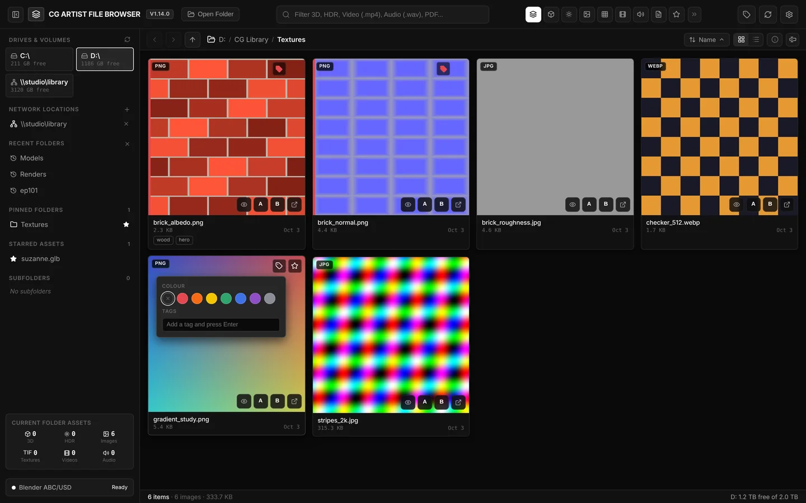

Deep dive
Labels and tags
Colour labels and tags for files and folders, the label panel, filtering by label, and where the labels are saved.
Colour labels
There are seven colours: red, orange, yellow, green, blue, purple and gray. Each card has a small tag button. Click it to open the label panel and choose a colour. A label shows as a stripe on the card's edge and as a small mark on the card, so you can spot it while scrolling.

Folders take labels and tags in the same way.
Tags
In the Tags part of the panel, type a word and press Enter. Tags are lower case, inner spaces are collapsed, and a tag can be up to 24 characters long. A file can have up to 12 tags. Tags on a card show as small chips, with a count when there are more than fit.
Filtering
The label filter in the top bar lists the colours and the tags used in the folder. Choose one or more and only the matching files stay in view. Clear the filter to see everything again.
Where labels are saved
Labels and tags are saved in file_labels.json, in the app's data folder next to the folder-icon store. Nothing is written inside your folders, so labels do not travel with the files. A file with no colour and no tags loses its entry.
Found a mistake or something missing? Edit this page on GitHub.